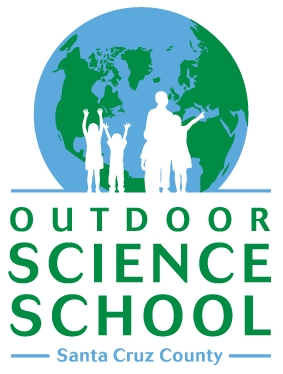
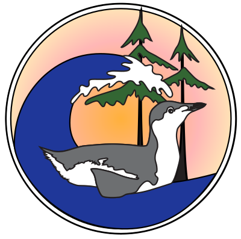

Volunteer!
March for Science Santa Cruz would love to have your help! Spread the word through social media. Make signs for the March. Volunteer to
- Help with set-up
- Become a March monitor
- Get your business, club, organization or agency to sign on as a partner.
- Get together with friends or family to make signs for the march. (Click here for some ideas on slogans.)
- Spread the word through social media
- Help us document the March with your photos or videos
- Share your photos on Instagram and Twitter at #ScienceMarchSantaCruz
Donate
We’re an all-volunteer committee, but our March for Science - Santa Cruz does involve some expenses, so we’re really counting on community members like you to help make it happen. The local Women’s March committee has generously offered to serve as the fiscal agent for local support. Your tax deductible donation can be made by check or online as follows:
- Online: Use this link, and add the initials MFS after your last name. Donate Here
- Check: Make check payable to CMS (Cultural Media Services) Memo line: add “Women’s March - Science March”. Send checks to:
850 Front Street #401
Santa Cruz, CA 95061
In either case, your contribution will be credited to the March for Science - Santa Cruz, and will be greatly appreciated! Any funds received in excess of our expenses will be donated to the Santa Cruz County Science Fair scholarship fund.
Contact Us
If you'd like to know more, please shoot us an email. Be sure to include your name, and phone number.
Tell us why YOU'RE marching for science; what science means to you. Send us a photo showing how YOU work, study, apply or enjoy science.
marchforsciencesantacruz@gmail.com
Snail Mail
Feel free to send donations or comments to our mailing address at
Science March Santa Cruz
PO Box 8305
Santa Cruz, CA 95061
Local Endorsements
- Congresswoman Anna Eshoo
- State Senator Bill Monning
- State Assemblymember Mark Stone
- Santa Cruz Mayor Cynthia Chase
- Santa Cruz Vice Mayor David Terrazas
- Santa Cruz County Supervisor Zach Friend
- Santa Cruz County Supervisor John Leopold
- Santa Cruz County Supervisor Ryan Coonerty
- Santa Cruz City Council Member Martine Watkins
- Watsonville City Council Member Felipe Hernandez
- Santa Cruz City Council Member Cynthia Mathews
- Soquel Elementary School District President Amanda Jackson Miller
- Santa Cruz City School Board President Deb Tracy-Proulx
- Santa Cruz City School Board Trustee Alisun Thompson
Partners
March for Science Santa Cruz is proud to partner with a broad range of community groups including public agencies, businesses, non-profit organizations, educational institutions, and more.
If your organization would like to partner with March for Science Santa Cruz, please contact us at marchforsciencesantacruz@gmail.com.

Democratic Party of Santa Cruz County
Democratic Party of Santa Cruz County
Society of Environmental Toxicology and Chemistry, Northern California Chapter
Society of Environmental Toxicology and Chemistry,
Northern California Chapter
Outdoor Science School of SC County
Society for Conservation Biology, Santa Cruz Chapter
Society for Conservation Biology, Santa Cruz Chapte
{kind=link}